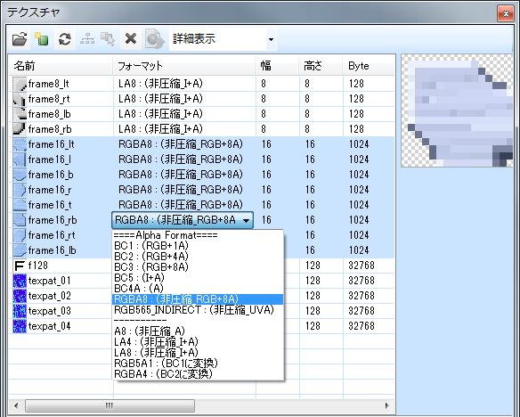

お使いのブラウザは JavaScript が使用できないため、本ドキュメントの一部機能が無効になっています。
JavaScript が無効の環境では目次を使用することができません。JavaScriptの実行が許可された状態で閲覧してください。
LayoutEditor 上で、テクスチャフォーマットの一括変換ができるようになりました。

ShiftキーもしくはCtrlキーを押しながらクリックすることで複数のテクスチャが選択でき、フォーマットを一括で変換することができます。